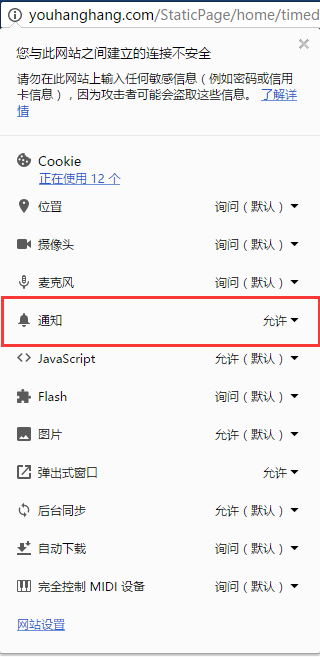

使用说明
1、初次打开网站
8s
后会向用户发出请求，请
允许
当前网站向用户弹出通知。
手动打开方式，在地址栏最左侧点击选择允许通知
2、关闭当前网页将没有定时功能，
使用时不要关闭。
定时提醒
添加提示内容,控制在400字以下,信息保存31天
添加
提醒内容
清除所有内容
复制所有内容
查看回收站
×
×
×
编辑当前第
条
内容
×
回收站内容
清除回收站内容
复制
修改
删除
每隔
无
0.5
1
1.5
2
0.002
小时提醒， 每天在
提醒一次， 在
提醒一次。
保存并启动
重置定时器
恢复